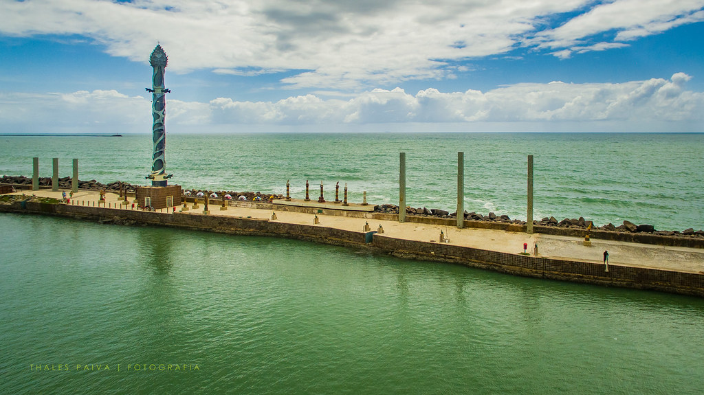

Bem-vindo ao Recife
Pontos Turísticos
Centro de Artesanato

Os antigos armazéns portuários que ficam ao lado do Marco Zero foram transformados em espaços voltados para o turismo. Um deles é o Centro de Artesanato de Pernambuco. Esse ponto turístico de Recife funciona em dois sentidos: é uma grande galeria que expõe as obras dos artesãos e artistas de todo o estado e também uma central de vendas, pois você pode comprar tudo o que está exposto no local. Mesmo que a ideia não seja levar nada, entre e confira. Tem peças em barro, algodão, tecido, madeira, palha, couro e inúmeros outros materiais. É impossível não querer levar alguma coisa para casa. O espaço reflete bem o que o Pernambuco é: diverso, colorido, alegre e cheio de emoção. É muita peça linda! Se você gosta de decoração e objetos regionais, se prepare!
Funcionamento: de segunda a sábado, das 8 às 19h; aos domingos, das 8 às 16h
Entrada gratuita
Parque das Esculturas Francisco Brennand
Com vista para o Marco Zero, o Parque de Esculturas de Francisco Brennand é acessível de barco a partir da praça ou de carro, por um bairro chamado Brasília Teimosa, que sedia a Praia do Pina. A melhor forma de chegar até ele é pela navegação no Rio Capibaribe. Não são nem 5 minutinhos para ir do Marco Zero até o local, que fica à beira-mar, no molhe do porto. No local, 90 esculturas são distribuídas no espaço que oferece uma vista privilegiada do Recife Antigo. Destaque para a Torre de Cristal, inspirada em uma flor descoberta por Burle Marx, que já dá para ser vista à distância e outras esculturas de ovos, tartarugas, pássaros etc. O local já foi mais preservado e alguns visitantes reclamam do aspecto de abandono que se encontra hoje em dia. Ainda assim é um bom passeio para ser feito de dia e nunca sozinho. Além do Parque existe a Oficina de Cerâmica Francisco Brennand.
Funcionamento: todos os dias, das 7 às 17h
Entrada gratuita. Se for de barco paga R$ 10 (ida e volta)
Conheça outros pontos turísticos de Recife acessando o link